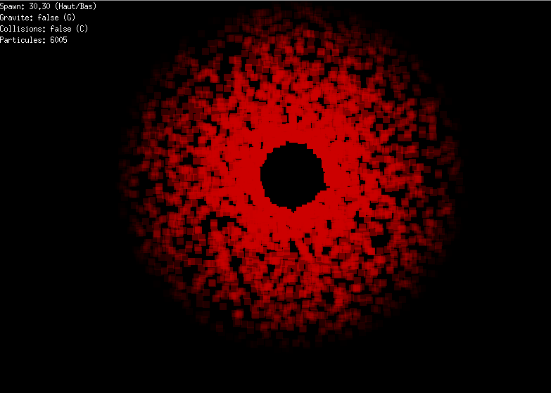
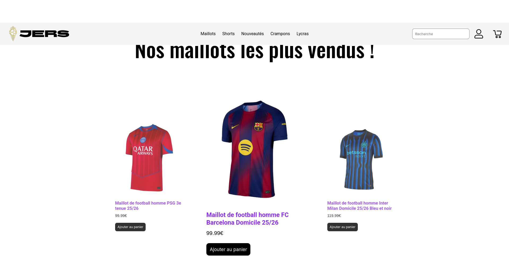
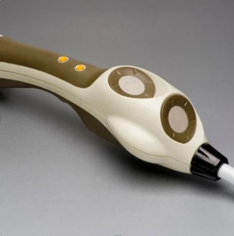

Étudiant BUT Informatique — IUT de Nantes
Développeur en formation, passionné par le développement web, les systèmes et la cybersécurité. Je construis des projets qui allient rigueur technique et curiosité créative.
Je m'appelle Kris Fouda, étudiant en première année de BUT Informatique à l'IUT de Nantes. Je suis curieux, autonome, et j'aime vraiment construire des choses — que ce soit une appli Java en cours, un bot Discord le soir, ou un site web pour un projet en équipe.
Ce qui me motive, c'est comprendre comment les systèmes fonctionnent et trouver des façons de les améliorer. Je code, je casse, je réessaie. C'est comme ça que j'apprends le mieux.
Code appris en cours et sur projets personnels, du web au back-end.
Gestion de code, travail en équipe, premiers pas sur les conteneurs.
Compétences acquises en cours et en projet d'équipe.
Attestation de compétences numériques officiellement reconnue.
Développement complet du moteur logique d'une application de modélisation de réseau social. Conception algorithmique sécurisée pour manipuler des structures complexes (matrices de contiguïté et valuation) et optimisation du calcul du chemin le plus court sans fuite de mémoire.
Analyse approfondie de trames réseau complexes et documentation technique de tables de routage. Configuration et déploiement d'un serveur DHCP sécurisé avec filtrage et isolation du trafic malveillant via Wireshark.

Moteur de simulation en temps réel affichant jusqu'à 6 000+ particules avec gestion de la gravité, des collisions et du spawn configurable. Les particules forment des figures dynamiques (anneaux, nuages) en réponse aux paramètres physiques modifiables à la volée via raccourcis clavier.
Implémentation en Python des algorithmes de plus courts chemins (Dijkstra et Bellman-Ford) appliqués à l'analyse de réseaux sociaux. Calcul de métriques sur des graphes réels (club de karaté, réseaux variés), comparaison des performances selon la taille du graphe, et rédaction d'un rapport d'analyse.

Participation à un projet d'équipe dans le cadre du BUT. Conception et développement d'un site web complet, gestion du code avec Git et présentation orale du projet devant jury.
Ce site même — conçu pour présenter mes projets, mon parcours et mes compétences. Design pensé pour être lisible, professionnel et facile à maintenir.
Conception d'une borne d'arcade en groupe au lycée, destinée au confort des élèves. Projet alliant électronique, conception matérielle et développement logiciel.

Conception en équipe d'une canne connectée pour personnes malvoyantes. Projet d'innovation solidaire combinant capteurs et traitement embarqué.
Résolution régulière d'exercices de développement logiciel en autonomie — algorithmes, petits outils, mini-projets — pour consolider mes bases en Python et Java.
Formation en développement logiciel, systèmes, réseaux et gestion de projets numériques. Travail en méthodes Agiles, SAÉ en équipe, projets pratiques.
Obtention du baccalauréat en 2025. Projets de groupe : borne d'arcade, canne pour malvoyants, initiation au développement web et Python.
Toutes mes expériences, compétences et centres d'intérêt rassemblés dans un document téléchargeable.
Une question sur mes projets, une idée de collaboration, ou juste envie d'échanger ? N'hésite pas à me contacter directement par mail ou via le formulaire.